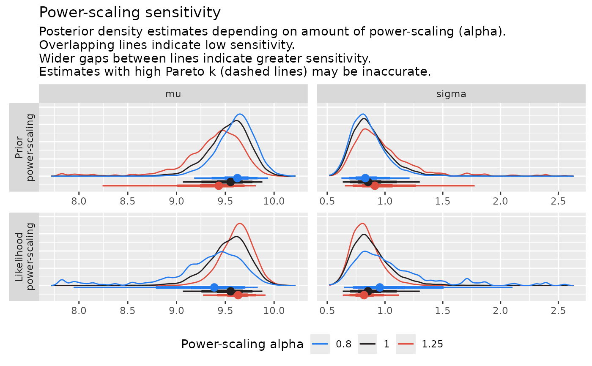

Diagnostic plots for power-scaling sensitivity
powerscale_plots.RdVarious diagnostic plots for power-scaling sensitivity. See Plot Descriptions below for details.
Usage
powerscale_plot_dens(x, ...)
powerscale_plot_ecdf(x, ...)
# S3 method for class 'powerscaled_sequence'
powerscale_plot_ecdf(
x,
variable = NULL,
resample = FALSE,
length = 3,
facet_rows = "component",
help_text = getOption("priorsense.plot_help_text", TRUE),
colors = NULL,
...
)
powerscale_plot_quantities(x, ...)
# S3 method for class 'powerscaled_sequence'
powerscale_plot_quantities(
x,
variable = NULL,
quantity = c("mean", "sd"),
div_measure = "cjs_dist",
resample = FALSE,
measure_args = NULL,
mcse = TRUE,
quantity_args = NULL,
help_text = getOption("priorsense.plot_help_text", TRUE),
colors = NULL,
...
)Arguments
- x
An object of class
powerscaled_sequenceor an object for whichpowerscale_sequencewill first be run on.- ...
Arguments passed to
powerscale_sequenceifxis not of classpowerscaled_sequence.- variable
A character vector of variable names. If
NULL(the default) all variables will be plotted.- resample
Logical; Indicate whether or not draws should be resampled based on calculated importance weights.
- length
Numeric specifying how many alpha values should be used. Ignored of the object is of class
powerscaled_sequence.- facet_rows
Character defining the rows of the plot facets, either "variable" or "component". Default is "variable".
- help_text
Logical indicating whether title and subtitle with explanatory description should be included in the plot. Default is TRUE. Can be set via option "priorsense.show_help_text".
- colors
Character vector of colors to be used for plots. Either length 3 for
powerscale_plot_ecdfandpowerscale_plot_denswith order lowest, base, highest; or length 2 forpowerscale_plot_quantitieswith order low Pareto k, high Pareto k. IfNULLthe defaults will be used.- quantity
A character vector specifying one or several quantities to plot. Options are "mean", "median", "sd", "mad", "quantile".
- div_measure
The divergence measure to use. The following methods are implemented:
"cjs_dist": Cumulative Jensen-Shannon distance. Default method. See functioncjs_distfor more details."js_dist": Jensen-Shannon distance."js_div": Jensen-Shannon divergence."hellinger_dist": Hellinger distance."kl_dist": Kullback-Leibler distance."kl_div": Kullback-Leibler divergence."ks_dist": Kolmogorov-Smirnov distance."hellinger_dist": Hellinger distance."ws_dist": Wassterstein distance (passmeasure_args = list(p = N)) for a different order, where N is the order.
- measure_args
Named list of further arguments passed to divergence measure functions.
- mcse
Boolean; If TRUE will plot +/- 2 * Monte Carlo standard error of the base quantity on the quantities plot.
- quantity_args
Named list of further arguments passed to quantity functions. Passed as
.argsto[posterior::summarise_draws].
Plot Descriptions
powerscale_plot_dens()Kernel density plot of power-scaled posterior draws with respect to power-scaling.
powerscale_plot_ecdf()Empirical cumulative distribution function plot of power-scaled posterior draws with respect to power-scaling.
powerscale_plot_quantities()Plot of posterior quantities with respect to power-scaling.
Examples
ex <- example_powerscale_model()
powerscale_plot_dens(ex$draws)
